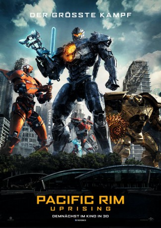

gesehen am 20.07.2018
gesehen am 20.07.2018Alternativ: Pacific Rim: Uprising gesehen am 20.07.2018
 
 IMDB-Wertung: 5.7 / 10
IMDB-Wertung: 5.7 / 10  Metascore:
Metascore: 
Vor einiger Zeit sah es noch danach aus, als würde Jake Pentecost eine glorreiche Zukunft als Jaeger-Pilot beschieden sein, der mit seinen Fähigkeiten dabei hilft, die Menschheit vor den monströsen Kaiju zu beschützen. Damit hätte er in die Fußstapfen seines Vaters treten können, der einst den Widerstand gegen die Monster aus einer anderen Welt anführte. Aber weil dieser in seine Ziehtochter Mako mehr Hoffnungen legte und Jake dessen Erwartungen nie wirklich zu erfüllen vermochte, verabschiedete er sich vom Pilotentraining und landete in der Unterwelt, wo er sich zum Dieb und Schwarzmarkthändler mauserte. Doch die Welt braucht ihn: Eine nie zuvor gesehene Bedrohung schickt sich dazu an, Städte in Schutt und Asche zu legen und Mako führt eine neue Generation junger Jaeger-Piloten an, zu der sich auch Jake gesellen soll.
Jahr: 2018
Dauer: 110 Minuten
FSK: 12
Land: USA Studio: Universal PicturesTonspuren: DTS - ,
Untertitel: Deutsch, Englisch,
Auflösung: 1080p (1920x800) Größe: 10158 MB
Genre: Action, Sci-Fi, Abenteuer
Regisseur: Steven S. DeKnight
Drehbuch: Steven S. DeKnight
Soundtrack: Lorne Balfe
Darsteller:
 John Boyega als Jake Pentecost
John Boyega als Jake Pentecost Scott Eastwood als Nate Lambert
Scott Eastwood als Nate Lambert Burn Gorman als Hermann Gottlieb
Burn Gorman als Hermann Gottlieb Charlie Day als Dr. Newton Geiszler
Charlie Day als Dr. Newton Geiszler Jin Zhang als Marshal Quan
Jin Zhang als Marshal Quan Adria Arjona als Jules Reyes
Adria Arjona als Jules Reyes Rinko Kikuchi als Mako Mori
Rinko Kikuchi als Mako Mori Karan Brar als Cadet Suresh
Karan Brar als Cadet Suresh Shane Rangi als Sonny's Crew #1
Shane Rangi als Sonny's Crew #1 Jai Day als PPDC Officer #1
Jai Day als PPDC Officer #1 Madeleine McGraw als Young Amara
Madeleine McGraw als Young Amara Josh Stamberg als Amara's Father
Josh Stamberg als Amara's Father Stephanie Allynne als Amara's Mother
Stephanie Allynne als Amara's Mother Bridger Zadina als Dean
Bridger Zadina als Dean Robert Maillet als Lt. S. Kaidanovsky (archive footage) (uncredited)
Robert Maillet als Lt. S. Kaidanovsky (archive footage) (uncredited)Datei: X:\2-Dilogie(N-Z)\Pacific Rim\Pacific Rim 2 Uprising (2018, FSK12, 1920x800).mkv seit 20.07.2018
Festplatte: HD Collection-2(A-Z)-3(A-M)
 Es gibt insgesamt 7 Filme in der Gruppe '2-Dilogie(N-Z)\Pacific Rim'
Es gibt insgesamt 7 Filme in der Gruppe '2-Dilogie(N-Z)\Pacific Rim'